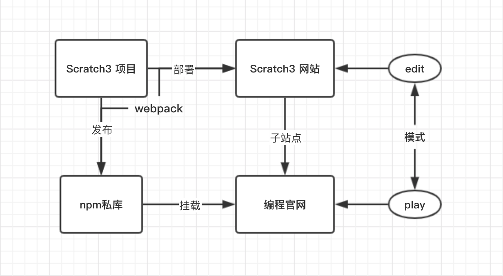

Scratch项目的二次开发
背景
近些年来，青少儿编程被炒得火热，而 Scratch 语言因其简单易学等性质备受关注。国内多数的 Scratch 教学项目是来自 Github 上的开源 Scratch 项目，目前官方最新的版本 scratch-gui 使用前端流行的 React 重写了一遍，而且该项目还在不断完善更新当中。
开源项目的二次开发就是在开源项目的基础上结合公司业务所做的二次开发，如果不考虑具体的项目，需要重视的问题是：在结合公司业务的基础上如何持续同步跟进官方项目？
添加自己的代码
现在想象一下场景，拉取 GitHub 上的源码后，然后直接写入公司业务代码，一波猛如虎的操作后，再次拉取 GitHub 上的最新代码，发现自己写的代码全部冲突了。自己代码和源码有冲突是件正常的事，但我们依然可以减少这种冲突的出现。
要减少这种冲突就需要将公司业务代码从源码中解耦出来，尽量不干或扰覆写源码。说到这，突然想到了设计模式中的中介者模式、装饰者模式等，就是说不管是通过中间层还是包裹层，尽量不修改源码部分。
我们再说说 scratch-gui 项目，scratch-gui 使用的是 React + Redux 的技术栈，组件化开发再结合状态管理，在大型项目上，阅读源码是件痛苦的事。组件嵌套深，状态错综复杂，不过 Scratch 在组件分类上还是比较清晰的，有负责展示的基础 UI 组件，有负责状态逻辑的容器组件。
之前所说的用来解耦的模式在组件化开发上貌似并不是很好用，尤其是容器组件，与其麻烦地拆解包裹还不如封装自己的业务组件。再说了，像基础组件这类组件，源码可能需要经常修改，二次开发中，即便再省事，也不要想着直接修改这类组件。添加业务代码的原则是：尽量加，避免改，然后在复合组件中组装基础组件。
状态流向：
资源流向：
分支管理
我们费了那么大的劲去拆分组件不仅仅是为了后期可扩展可维护，更是为了减少因为合并最新源码所带来的代码冲突。对于提交频繁的开源项目，我们希望能够跟进同步最新代码。同时，对于业务代码的改动和提交信息，我们也很十分关注。
在说分支管理之前，我们先看看一些常用的 git 命令：
1 | # 查看 git 命令 |
考虑到前端工程化的普及，我们把分支分为官方源码分支（Office），开发分支（dev），测试分支（test），预发布分支（pre）和生产分支（prod）。
我们是基于开源项目的二次开发，代码托管的位置自然会在两个位置，官方源码是在 GitHub 上，而我们的代码会放在公司的服务器上，所以我们需要添加两个远程仓库的地址。除了 office 分支关联 Github 上的远程仓库，其它的分支都是关联自己服务器的远程仓库。
在这里我们是将分支管理分为两个阶段，第一个阶段是首次拉取官方源码，切出 dev 分支，完成业务开发。第二个阶段为后期代码跟进同步与后期的需求开发。
第一阶段
切出 dev 分支后，我们要把公司业务代码了。可是在我们写自己业务的时候，人家官方也可能不断地完善更新。此时，我们要不断去合并最新的代码，在合并时我们使用 rebase 去合并代码，这样我们的提交记录会很清晰，毕竟我们也不会关注官方的更新。
当然了，在合并的过程中，可能会遇到了冲突的情况，在这种情况下，好多人喜欢使用 merge 命令。一个一个地去解决突也挺好的，而且 rebase 的功能可不止于此。
前期的业务开发完成后，还需要测试上线呢。测试分支（test），预发布分支（pre）和生产分支（prod）都差不多，就只说生产分支（prod）。我们切到 prod 分支，通过 merge 指令合并通过测试的分支。merge 和 rebase ，到底什么场合用，推荐的方案是，个人分支使用 rebase，公共分支使用 merge。
第二阶段
第二阶段也是差不多，区别可能是我们不仅要解决是官方源码的冲突，还有自己团队代码的冲突。我们从 prod 分支切出 dev 分支，因为可能是团队协作，所以在合并到 prod 分支时，还需要同步 prod 上的更新。
我们切出那么多分支可不是闹着玩的，前端项目的打包行为，后端数据的来源的等，在不同的环境下都是存在区别的，所以针对不同的环境需要写不同的指令脚本，这也是开源项目二次开发需要改造的地方。
构建及部署
并不是说要从零开始设计构建流，开源项目已经定义好了构建流，我们要做的只是按照自己的需要修改构建脚本。在 scratch-gui 中，构建命令是由 NPM 脚本结合 webpack 构建工具来完成的。在开发环境中为了提高开发体验，我们可能需要修改 SourceMap，使用模块热替换等，在不同环境我们还需要使用不同的打包策略等等。
1 | { |
至于部署，前端项目是相对比较容易的，把打包好的项目往服务上一丢就算完成部署了。手动部署，自动化部署还是持续部署，这都无所谓，我们只要针对不同环境配置不同的构建脚本即可。
补充
公司的 Scratch 项目之前是有做过二次开发的，由于没有考虑分支管理和后期的持续跟进，所以后期拉取最新代码时，到处都是冲突，至此，项目已经没有持续开发下去的意义了。
之前的改造也是挺有意思的，改造重点是放在了项目的输入和输出上。这么做的好处就是不用详细地知道项目的细节，起码在视图上让人察觉不出任何不同。不过，就是这种很常用的方法，在这里却暴露了一个很大的问题。项目是开源的、是持续更新的，我们同样也需要持续跟进，在之前的项目中，虽然做到了输出和输入的一致，但是也抛弃项目的细节 —— 项目原有的状态管理。
我这一次的改造没有采用这种方法，而是使用的上面提到的方案。在我看来，基于 Scratch 的二次开发难度并不大只是有些繁琐。组件化开发配合状态管理，头痛的就是这种数据驱动的方式，状态在不同组件的生命周期中穿梭，导致状态的跟踪特别麻烦。所以，只有搞清楚组件的层级关系和用途，才能把整条线串起来。

项目大体如上，Scratch3 模式分为两种，一为可编辑模式，另一个是不可编辑模式。Scratch3 网站是编程官网的子站点，使用的是反向代理指向不同的项目。Scratch3 项目经过二次开发后打包部署到线上，另一方面也要打包成依赖上传到 npn 私库，供编程官网使用。编程官网和 Scratch3 的技术栈不同，编程官网提供挂载点即可。